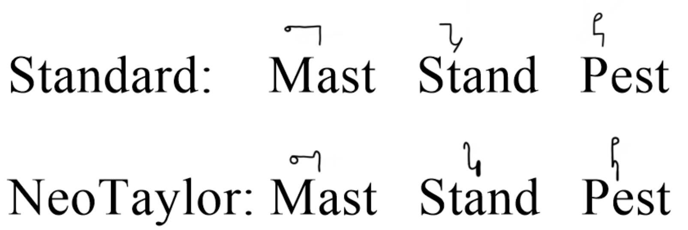
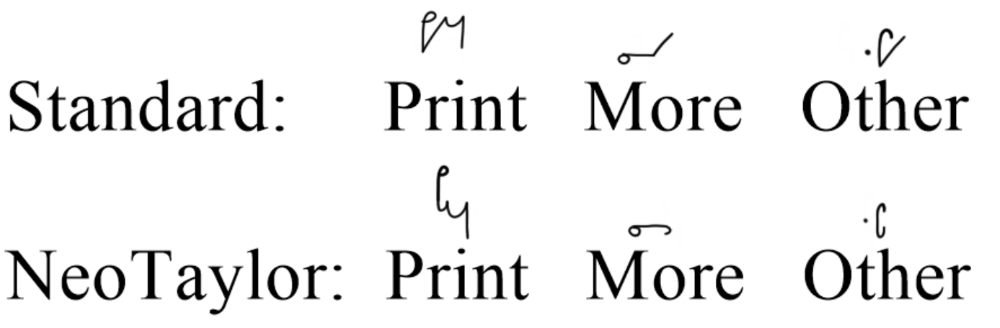
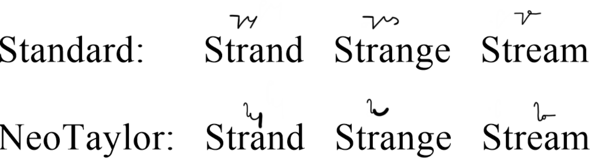
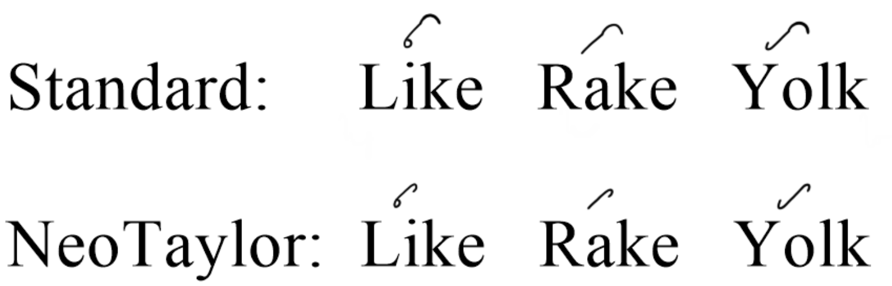

The consonant pair ST is very common in English words and as such it has it's own stroke. The ST sound is represented as a vertical downstroke with a hook on the left side of it. Like a backwards Th stroke[14].
Straight downstrokes or horizontal strokes followed by an R sound can be written as the downstroke with a small hook on the end. The hook can be on either side of the stroke. The use of the hook R over the stroke R depends on context but generally tend to use the hook[12].
Using the ST stroke and R hook rule we can create a single stroke for another common consonant combination of STR. Which is the ST stroke followed by an R hook.
Straight upstrokes followed by a K sound are always written with a small hook at the end[13].
